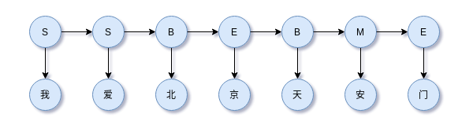
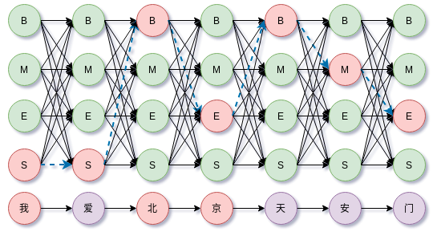

概率图模型系列（3）：隐马尔可夫模型（HMM）
HMM是描述时间序列生成的概率模型，属于概率生成模型，由一个隐藏的马尔可夫链随机生成不可观测的状态序列，再由各个状态随机生成一个观测进而构成观测序列的过程。
由于 HMM 涉及到的内容比较多，需要马尔科夫链的基础知识，可以参考过去文章马尔可夫链及其Python实现。有了马尔科夫链的知识后，HMM的定义就相对简单了。HMM是由一条不可观察的马尔科夫链生成不可观察的状态序列，再由个状态生成可观察变量的生成模型。
HMM及其参数描述
HMM把马尔可夫链作为隐变量（离散的不可观察变量），通过隐变量生成不可观察的序列（隐状态序列），再由其序列中的各个时间点的状态生成可观察的变量。假设隐变量状态空间为，
例如，在中文分词中，常用BMES作为状态空间，
假设可观察的变量的状态空间（观察空间）为，
例如，在中文分词中，所有的汉字作为观察空间，
HMM生成的隐状态序列与可观察序列是一一对应的，例如隐状态序列为，
对应的观察序列为，
例如，SSBEBME对应“我爱北京天安门”。示意图如下，

上图对应的隐状态序列为，
对应的观察序列为，
1 | 我 爱 北 京 天 安 门 |
以上这些都很好理解吧。
事实上，注意到，HMM的每个时间步都可以看做是朴素贝叶斯模型，
任意一个时间步的y（此处对应BMES标签集）对应$x_1, \dots, x_n$（此处为汉字集），因此HMM可以看成是朴素贝叶斯模型在时间维度上的扩展，并使用马尔科可假设约定相邻状态的约束。
HMM的隐状态序列$I$总有个开头吧？比如上述的“SSBEBME”，开头为“S”状态。开头出现不同的状态有不同的概率，我们称它为初始状态分布，表示为，
其中$\pi_i = P(i_1 = s_i)$表示初始时刻$t = 1$处于状态$s_i$的概率。就是统计大量初始分布的概率。
HMM的隐状态的转换由状态转移矩阵决定，
矩阵中的每个元素为，
表示在时刻$t$状态为$s_i$转移到时刻$t+1$状态为$s_j$的概率是$a_{ij}$。可以看到时刻$t+1$状态为$s_j$只由时刻$t$状态为$s_i$决定，和更久远时刻的状态无关，这称为马尔科可假设。注意到由于概率的归一性，有
HMM的隐状态对应的可观察状态由观察概率矩阵（发射矩阵）决定，
矩阵中的每个元素为，
表示在时刻$t$状态为$s_j$生成对应时刻的可观察状态$v_k$的概率是$b_{jk}$，有时候我们也用$b_j(k)$来说表示。这里也可以看到，观察状态$v_k$之由当前时刻的状态为$s_j$决定，这称为观察独立性假设。注意到，由于概率的归一性，有
初始状态分布、状态转移矩阵和观察矩阵决定了HMM的所有参数，即
总之，HMM只考虑两点：
- 隐状态的状态转移受到马尔科可假设约束
- 观察状态只由当前时刻的隐状态决定，即观察独立性假设
HMM的概率化描述
以上我们使用基于矩阵的形式描述HMM及其参数，其实它还有基于概率的描述，两种是等价的。首先HMM可以解决序列标注问题，以中文分词为例。例如输入中文序列$(x_{1}, x_{2}, \dots, x_{n})$，HMM要预测其标注序列$(y_{1}, y_{2}, \dots ,y_{n})$，可以简单表示为，
基于HMM的两点约束，HMM的联合概率分布为，
其中$x = (x_1, x_2, \dots, x_n),y=(y_1, y_2, \dots, y_n)$，$P(y_1|y_{0}) = P(y_1)$，$P(x_i|y_i)$称为发射概率，所有可能组成观察矩阵，$P(y_i|y_{i-1})$称为转移概率，所有的可能组成状态转移矩阵。
于是，$P(y_1|y_{0}) = P(y_1)$对应上一节中HMM的参数$\pi$，$P(x_i|y_i)$对应观察矩阵$\boldsymbol{B}$中相应的元素，$P(y_i|y_{i-1})$对应状态矩阵$\boldsymbol{A}$中相应的元素。因此，描述HMM有两套数学语言，一套是概率语言、一套是矩阵的语言，其实它们是等价的。
HMM四个基本问题
HMM作为概率图模型涉及四个基本问题。
概率计算问题：已知HMM模型，计算观察序列的概率$P(O|\lambda)$
参数学习问题：已知观察序列$O$，状态序列$I$已知或未知，计算HMM的参数$\lambda$
隐状态序列预测问题：已知HMM模型，以及观察序列$O$，推断隐状态序列$I$
采样与生成：已知HMM模型，生成观察序列$O$和隐状态序列$I$
采样和生成
HMM是生成模型，典型的贝叶斯网络，即有向无环图（DAG）模型。其生成样本的过程：
- （1）首先根据初始状态分布采样以隐状态
- （2）根据当前隐状态和状态转移矩阵获得下一时间步隐状态的分布
- （3）根据当前隐状态获得观察状态分布，从该分布中采样一个观察样本并输出
- （4）迭代下一个时间步
观察序列概率计算
首先我们来解决观察序列概率计算，假定我们已经知道HMM的参数$\lambda = (A,B,\pi)$，计算观察序列的概率$P(O|\lambda)$
直接计算
最直接的思路是枚举所有的隐状态序列，
这里$I = (i_1, \dots, i_T)$是一个排列组合的求和，计算量非常大，是 $O(TN^{T})$ 时间复杂度。这里有一个技巧，为避免连续乘积的数值下溢，可以取对数然后求和。
间接计算
既然直接计算算法复杂度大，那么可以使用间接计算，一下示意图作为计算的参考辅助，
有与对观察序列的计算是从左到右，因此成为前向计算方法
容易计算初始值，
向前递归计算
这个过程的推导技巧是还原出$\alpha_t(i)$，这样就可以利用上一步的计算结果递归计算。一直递推下去可获得$\alpha_{T}(i)$的结果，
迭代到第$T$步，所有的隐状态构成结果，
类似的思路，后向计算，定义
容易计算$\beta_{T}(i)$，
向后递归计算，
其思路依旧是展开后能够还原出$\beta_t(i)$以便利用上一步计算的结果，如此迭代下去获得，$\beta_1(i)$的结果，
于是获得观察序列概率，
间接计算尽管看起来有点复杂，但是其思路很简单，就是构造概率计算的递归关系，并逐时间步迭代。
HMM参数学习
HMM参数学习分两类：
- 已知观察序列$O$，状态序列$I$已知
- 已知观察序列$O$，状态序列$I$未知
对于序列标注问题，状态序列$I$已知相当于标签已知，所以也称为带标签的学习问题。于之对应的是状态序列$I$未知，即无标签的学习问题。
带标签的学习问题
状态转移矩阵参数估计，$a_{ij} = P(i_{t+1} = q_{j}|i_{t}=q_{i})$
其中$i,j$取值均在$[1, N]$范围内。
观察矩阵的参数估计，
其中$j \in [1, N], k \in [1, M]$，通常在实现的时候使用稀疏形式，如字典来存储参数。如果遇到OOV问题，可以统一使用一个
初始状态$\pi = (\pi_{1}, \dots, \pi_{N})$，其中
即所有待学习样本的初始状态的概率。不过初始状态在这里用不上，在生成任务上才需要。
无标签的学习问题
无标签的学习问题，即无监督序列建模，一般使用Baum-Welch，实则是EM算法在HMM中的应用。
隐状态序列预测
隐状态序列预测就是已知HMM模型，以及观察序列$O$，推断隐状态序列$I$。有两种策略：
- 贪心策略
- 基于动态规划的维特比算法
贪心策略
贪心策略是每个时间步取概率最大的状态而不考虑前后时间步的约束。假设给定模型参数$\lambda = (\pi, A, B)$以及观察序列$O = (o_1, o_2, \dots, o_T)$，令
表示在时间步$t$观察到$O$条件下处于状态$q_i$的概率。
于是，贪心策略下，第$t$个时间步的解为，
这里$N$为隐状态数量。依次解得$t = 1, 2, \dots, T$，获得隐状态序列$\hat{I} = (\hat{i}_1, \hat{i}_2, \dots, \hat{i}_T)$。
贪心策略计算十分简单，但是并没有考虑到状态转移的约束，因此不能保证解得的状态序列是最优序列。该算法通常用在考虑解码速度（计算性能）而不过分强调模型性能的场景上。至于对模型性能的考虑，则要使用维特比算法。
维特比算法
以上分析我们知道HMM求隐状态序列就是求，
中$y=(y_1, y_2, \dots, y_n)$的最大概率，称为最优解码。最优解码不光是$P(x_i|y_i)$的最大值，还要考虑$P(y_i|y_{i-1})$。
其中，$P(y_i|y_{i-1})$表示相邻两个标签间的转移概率，比如，
表示时间步$t-1$标签为$M$转移到时间步$t$标签为$B$的概率，当然正确的标注下这样的标签转移是不存在的。这里还需要注意一个边界条件，就是$P(y_1|y_{0})$表示初始状态分布。
而，$P(x_i|y_i)$表示标签概率分布，对于给定的时间步$i$，$x$的取值是固定的，比如观察变量“北”，但是其对应的标签是有不同的概率，一般HMM、CRF、CNN、RNN或者Dense+softmax网络都可以计算。比如“北”字，
类似地，“京”字，
综合上述，那么沿着所有时间步前进，上式就构成篱笆（Lattice）网络的有向无环图（DAG）。如下图所示，

于是求解$\hat{y} = \arg \max_{y} P(y|x)$就成了篱笆（Lattice）网络上的最大概率路径或最短路问题。它的计算复杂度是$O(T\cdot N^2)$，$T$是时间步数，$N$是状态数量。其实抛开HMM看，维特比算法解决的就是使用动态规划解决方阵型DAG的最短路算法，使用CNN、RNN、Dense+softmax等模型解决序列标注问题同样可以使用维特比解码最优序列。
维特比算法要做的是在这些众多的路径组合中找到概率最大的路径。上图路径长度为7，每个时间步有4种可选择的状态，因此路径总共有$4^7$种。对于更一般的情况，路径长度为$l$，每个时间步状态数量为$n$，那么所有路径组合有$n^l$种。直接枚举所有路径搜索是不可能的。
最短路中有一个简单朴素的特性：如果$(i_1, \dots, i_j, \dots, i_n)$是所有路径中的最短路，那么任意$i_j$切分出的两段分路径$(i_1, \dots, i_j)$和$(i_j, \dots, i_n)$都是这两段路径的端点所构成的所有可能路径中最优的，否则如果还有更优的分路径，就会有比原来更短的路径，这与一开始的最优路径假设相悖。这个特性用来排除在前行搜索最优路径时把不符合以上特性的分路径过滤掉。
例如，上图的最优路径为$S \to S \to B \to E \to B \to M \to E$。最优路径的分路径（最优路径的某一点把它切成两段）也是最优，否则分路径可以找到更优的分路径，那么合并到最优路径就得到一条比原来最优路径更好的路径，这与假设矛盾。
因此，维特比算法的核心思想是过滤掉不符合最短路思想的路径。
定义$\delta_t(i)$表示时刻$t$状态为$i$的最优路径概率，
于是有地推关系，
时刻$t+1$状态为$i$的所有路径中概率最大路径在$t$时刻的状态为，
以上这些递推过程的中间参数都可以使用矩阵来存储。对于时刻$T$，容易求得，
于是获得的$\hat{i}_T$容易递推回溯，令$\hat{i}_{t+1} = \hat{i}_T$，有
于是就获得最优解码，
需要注意一点，在实现时为避免数值溢出，一般都是取log后求和避免逐时间步连续乘积。
基于numpy的实现如下，
1 | import numpy as np |
HMM .vs. Navie bayes
朴素贝叶斯分类器的目标函数是后验概率最大化，分类器可以写成，
HMM是对序列建模，最大概率序列输出可以表示为，
两者都是生成模型，直接对$P(x,y)$建模，HMM可以看成是Navie bayes在时间维度上的拓展，同时考虑相邻状态的马尔科夫约束。
HMM的不足之处
HMM两个基本假设：
- 观察值之间严格独立，观察独立性假设
- 状态转移过程中，当前状态仅依赖于前一个状态（一阶马尔科夫模型）
这两个假设换成中文分词语境来说就是，在隐状态集为{B,M,E,S}下，当前标注的取值取决于前一时间步的标注，而当前时刻的观察值（中文字）只由当前时间步的标注决定。显然，这样的约束导致模型忽视上下文特征表达能力不够。
实现
后期补充了实现，项目实现源码地址：hmm-ner-cws。
总结
本文从两套数学语言出发描述HMM，然后简单梳理一下HMM的四个问题，包括：HMM的观察序列生成、观察序列相关的概率计算、参数学习以及维特比算法。
参考文献
[1] 《统计自然语言处理》
[2] 《统计机器学习》
[3] https://en.wikipedia.org/wiki/Maximum-entropy_Markov_model